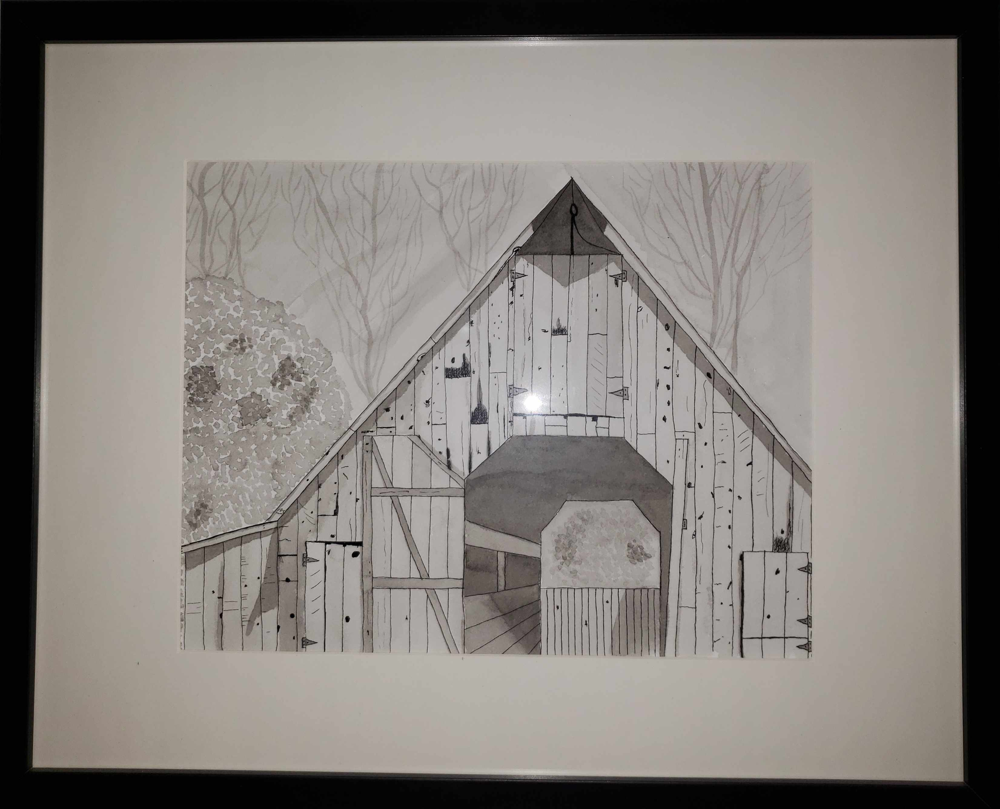
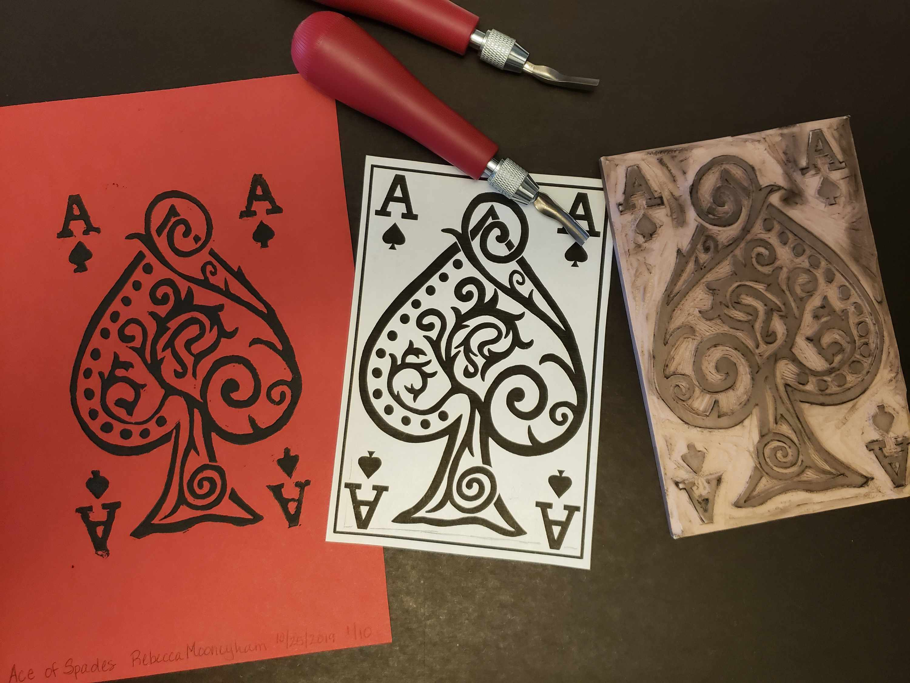

Pen and Ink Drawings
One of the hobbies I enjoy doing is pen and ink drawings. Below is an example of a drawing I did using pen and ink as well as using an ink wash.
Linocutting
Another hobby I enjoy is linocutting. Below is the first project I completed using the linocutting technique. It's one of my favorites.
